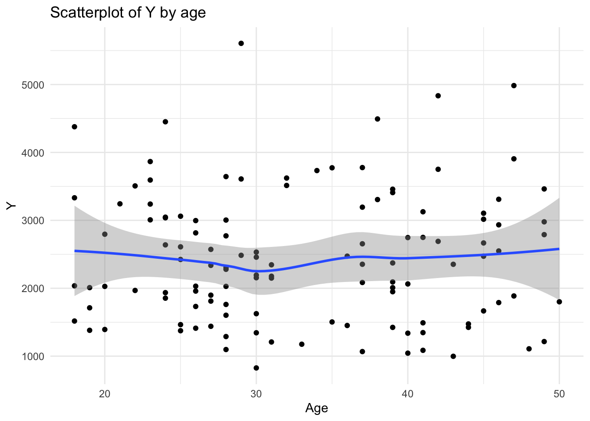
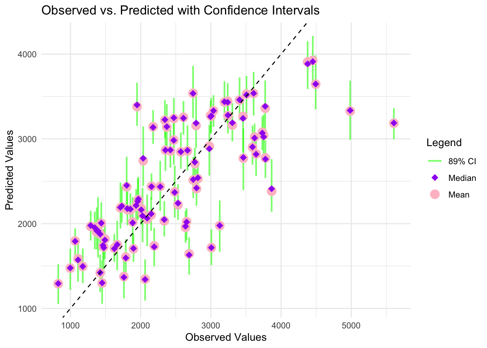
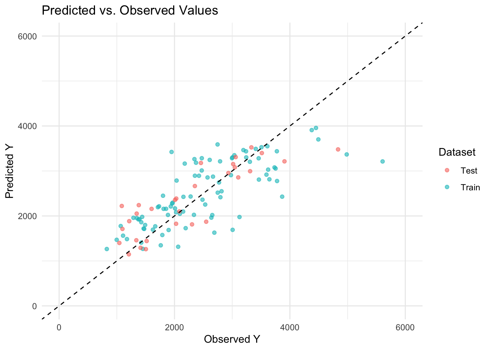

Rows: 2678 Columns: 17
── Column specification ────────────────────────────────────────────────────────
Delimiter: ","
dbl (17): ID, CMT, EVID, EVI2, MDV, DV, LNDV, AMT, TIME, DOSE, OCC, RATE, AG...
ℹ Use `spec()` to retrieve the full column specification for this data.
ℹ Specify the column types or set `show_col_types = FALSE` to quiet this message.
Creating a visualization of the outcome over time by dose level for each individual
Looking at the structure
#Creating figure of DV by time for each person by dose level ggplot(data, aes(x = TIME, y = DV, group = ID)) +geom_line() +geom_point() +facet_wrap(~DOSE) +# Facet by DOSElabs(title ="Individual Response Over Time by Dose Level",x ="Time",y ="Dependent Variable (DV)") +theme_minimal()
#Looking at the structure of the data#summary(data)#str(data)#head(data, n = 30)#Confirming OCC values for people, some have OCC = 1 and OCC = 2occ_check <-table(data$ID, data$OCC)
Data cleaning steps
Since some people have OCC values of both 1 and 2, I’m restricting the data to observations with OCC values = 1 as instructed.
#Restricting to rows where OCC = 1data2 <- data %>%filter(OCC ==1) #Calculating sum of DV for each personDV_sum <- data2%>%filter(TIME !=0) %>%group_by(ID) %>%summarize(Y =sum(DV))#Restricting data to only rows where time = 0time_0 <- data2 %>%filter(TIME ==0)#Joining sum of DV with other participant characteristicsdata3 <-left_join(time_0, DV_sum, by =join_by(ID))data4 <- data3 %>% dplyr::select(Y, DOSE, AGE, SEX, RACE, WT, HT) %>%#restricing to variables of interestmutate(RACE =as_factor(RACE), SEX =as_factor(SEX)) #converting race and sex to factor variablesstr(data4) #confirming the data cleaning steps worked as intended
A summary of the distribution of each variable is provided below. For factor variables, n (%) is presented, and for numeric variables, the median (interquartile range) is shown.
To visually inspect the data, histograms of each numeric variables is shown, as well as bivariate plots of Y by each variable (overlaid histograms for factor variables, scatterplots for continuous variables)
tbl_summary(data4)
Characteristic
N = 1201
Y
2,349 (1,689, 3,054)
DOSE
25
59 (49%)
37.5
12 (10%)
50
49 (41%)
AGE
31 (26, 41)
SEX
1
104 (87%)
2
16 (13%)
RACE
1
74 (62%)
2
36 (30%)
7
2 (1.7%)
88
8 (6.7%)
WT
82 (73, 90)
HT
1.77 (1.70, 1.82)
1 Median (Q1, Q3); n (%)
#Histogram of ageggplot(data4, aes(x = AGE)) +geom_histogram(position ="identity", alpha =0.5, color ="black") +labs(title ="Histogram of AGE",x ="Age",y ="Count") +theme_minimal()
`stat_bin()` using `bins = 30`. Pick better value with `binwidth`.
#Histogram of weightggplot(data4, aes(x = WT)) +geom_histogram(position ="identity", alpha =0.5, color ="black") +labs(title ="Histogram of WT",x ="Weight",y ="Count") +theme_minimal()
`stat_bin()` using `bins = 30`. Pick better value with `binwidth`.
#Histogram of HTggplot(data4, aes(x = HT)) +geom_histogram(position ="identity", alpha =0.5, color ="black") +labs(title ="Histogram of HT",x ="Height",y ="Count") +theme_minimal()
`stat_bin()` using `bins = 30`. Pick better value with `binwidth`.
#Histogram of Y by sexggplot(data4, aes(x = Y, fill = SEX)) +geom_histogram(position ="identity", alpha =0.5, color ="black") +labs(title ="Histogram of Y by SEX",x ="Y",y ="Count",fill ="Sex") +theme_minimal()
`stat_bin()` using `bins = 30`. Pick better value with `binwidth`.
#Histogram of Y by doseggplot(data4, aes(x = Y, fill =as_factor(DOSE))) +geom_histogram(position ="identity", alpha =0.5, color ="black") +labs(title ="Histogram of Y by DOSE",x ="Y",y ="Count",fill ="DOSE") +theme_minimal()
`stat_bin()` using `bins = 30`. Pick better value with `binwidth`.
#Scatterplot of Y by doseggplot(data4, aes(y = Y, x=DOSE)) +geom_point() +labs(title ="Scatterplot of Y by DOSE",x ="Y",y ="Count") +theme_minimal()
#Histogram of Y by RACEggplot(data4, aes(x = Y, fill = RACE)) +geom_histogram(position ="identity", alpha =0.5, color ="black") +labs(title ="Histogram of Y by RACE",x ="Y",y ="Count",fill ="RACE") +theme_minimal()
`stat_bin()` using `bins = 30`. Pick better value with `binwidth`.
#Scatterplot of Y by ageggplot(data4, aes(x = AGE, y = Y)) +geom_point() +labs(title ="Scatterplot of Y by age",x ="Age",y ="Y") +geom_smooth() +theme_minimal()
`geom_smooth()` using method = 'loess' and formula = 'y ~ x'

#Scatterplot of Y by weightggplot(data4, aes(x = WT, y = Y)) +geom_point() +labs(title ="Scatterplot of Y by WT",x ="Weight",y ="Y") +geom_smooth() +theme_minimal()
`geom_smooth()` using method = 'loess' and formula = 'y ~ x'
#Scatterplot of Y by heightggplot(data4, aes(x = HT, y = Y)) +geom_point() +labs(title ="Scatterplot of Y by HT",x ="Height",y ="Y") +geom_smooth() +theme_minimal()
`geom_smooth()` using method = 'loess' and formula = 'y ~ x'
EDA Notes
49% of people had a dose of 25
Age seems bimodal with peaks around ages 26 and 38.
Sex = 1 was most common (87%)
Race = 1 was most common (62%), some people did have a race of 88 which is commonly a category for missing but I won’t do any cleaning relaed to this since I’m not sure exactly what 88 means without a codebook
Median WT was 82, WT was relatively normally distributed
Median HT was 1.77, HT was left-skewed, but deviations from normal weren’t egregious
Distribution of Y does not appear to vary substantially by sex and race (based on histograms)
There appear to be distinct distributions of Y by dose level and there appears to be a dose response; Y is lower for dose of 25 and higher for dose of 50.
There appears to be no association between Y and age
There may a weak negative association between Y and both WT and HT
Model fitting
Several models will be fit.
Dose: Model 1
Linear regression modeling Y as a function of Dose (modeled as a continuous variable)
lin_reg_model <-linear_reg() %>%set_engine("lm") %>%set_mode("regression")# Create a recipelin_reg_recipe <-recipe(Y ~ DOSE, data = data4) %>%step_dummy(all_nominal_predictors()) # Convert categorical predictors to dummy variables# Create a workflowlin_reg_workflow <-workflow() %>%add_model(lin_reg_model) %>%add_recipe(lin_reg_recipe)# Fit the modellin_reg_fit <-fit(lin_reg_workflow, data = data4)# View resultstidy(lin_reg_fit)
# Generate predictions on the test setpredictions <-predict(lin_reg_fit, new_data = data4) %>%bind_cols(data4) # Combine with actual valuestable(predictions$DOSE, predictions$.pred) #Looks like the predictions output correctly, every row with dose = 25 has the same Y
# Compute RMSE and R-squaredreg_metrics <- predictions %>%metrics(truth = Y, estimate = .pred) %>%filter(.metric %in%c("rmse", "rsq")) # Extract only RMSE and R-squared# Print resultsprint(reg_metrics)
# A tibble: 2 × 3
.metric .estimator .estimate
<chr> <chr> <dbl>
1 rmse standard 666.
2 rsq standard 0.516
Summary of model parameters:
The average level of Y is 323.06 when dose = 0. There was a strong positive association between dose and Y. For each 1-unit increase in dose, Y increases by 58.21.
The model’s RMSE was 666.461787, and the R2 value was 0.5156446.
Dose: Model 2
Linear regression modeling Y as a function of DOSE, AGE, SEX, RACE, WT, and HT
# Create a recipelin_reg_recipe2 <-recipe(Y ~ DOSE + AGE + SEX + RACE + WT + HT, data = data4) %>%step_dummy(all_nominal_predictors()) # Convert categorical predictors to dummy variables# Create a workflowlin_reg_workflow2 <-workflow() %>%add_model(lin_reg_model) %>%add_recipe(lin_reg_recipe2)# Fit the modellin_reg_fit2 <-fit(lin_reg_workflow2, data = data4)# View resultstidy(lin_reg_fit2)
# Generate predictions on the test setpredictions2 <-predict(lin_reg_fit2, new_data = data4) %>%bind_cols(data4) # Combine with actual values# Compute RMSE and R-squaredreg_metrics2 <- predictions2 %>%metrics(truth = Y, estimate = .pred) %>%filter(.metric %in%c("rmse", "rsq")) # Extract only RMSE and R-squared# Print resultsprint(reg_metrics2)
# A tibble: 2 × 3
.metric .estimator .estimate
<chr> <chr> <dbl>
1 rmse standard 591.
2 rsq standard 0.619
Summary of model parameters
After adjustment for age, wt, ht, sex, and race, there was a strong positive association between dose and Y. For each 1-unit increase in dose, Y increases by 59.93, after adjusting for other characteristics. The magnitude of the association between dose and Y was comparable in the unadjusted and adjusted models. Weight (assuming this is weight based on the name WT) was the only other significant predictor of Y after adjusting for other characteristics.
The model’s RMSE was 590.8534715, and the R2 value was 0.6193084.The RMSE was lower and the R2 value was higher in the adjusted model compared to unadjusted, indicating the adjusted model explains more of the variation in Y than the unadjusted model.
Dose: Model 3
Linear regression modeling Y as a function of Dose (modeled as a factor)
data4 <- data4 %>%mutate(dose_f =as_factor(DOSE))# Create a recipelin_reg_recipe3 <-recipe(Y ~ dose_f, data = data4) # Create a workflowlin_reg_workflow3 <-workflow() %>%add_model(lin_reg_model) %>%add_recipe(lin_reg_recipe3)# Fit the modellin_reg_fit3 <-fit(lin_reg_workflow3, data = data4)# View resultstidy(lin_reg_fit3)
# Generate predictions on the test setpredictions3 <-predict(lin_reg_fit3, new_data = data4) %>%bind_cols(data4) # Combine with actual valuestable(predictions3$DOSE, predictions3$.pred) #Looks like the predictions output correctly, every row with dose = 25 has the same Y
# Compute RMSE and R-squaredreg_metrics3 <- predictions3 %>%metrics(truth = Y, estimate = .pred) %>%filter(.metric %in%c("rmse", "rsq")) # Extract only RMSE and R-squared# Print resultsprint(reg_metrics3)
# A tibble: 2 × 3
.metric .estimator .estimate
<chr> <chr> <dbl>
1 rmse standard 666.
2 rsq standard 0.516
Because there were only 3 levels of dose, I also wanted to see how a model treating dose as a factor fit. The model fit statistics (RMSE and R2) were the exact same as the unadjusted model using a continuous dose. There were small differences in the expected mean Y for each dose group, which is expected given the assumption of a linear association between dose and Y when dose is considered continuous.
Sex: Model 1
Logistic regression modeling sex as a function of Dose (modeled as a continuous variable)
# Define the logistic regression modellog_reg_model <-logistic_reg() %>%set_engine("glm") %>%set_mode("classification")# Create a recipelog_reg_recipe <-recipe(SEX ~ DOSE, data = data4) %>%step_dummy(all_nominal_predictors()) # Convert categorical predictors to dummy variables# Create a workflowlog_reg_workflow <-workflow() %>%add_model(log_reg_model) %>%add_recipe(log_reg_recipe)# Fit the modellog_reg_fit <-fit(log_reg_workflow, data = data4)# Generate predictions_sex on the test setpredictions_sex <-predict(log_reg_fit, new_data = data4, type ="prob") %>%bind_cols(data4)%>%mutate(pred_sex =if_else(.pred_1 >0.87, 1, 2), pred_sex_f =as_factor(pred_sex))#0.87 was used as the cut-off for determining sex based on the sample, 87% of people were sex = 1#I tried 0.5 first, but all people were coded as sex = 1 which created some issues in code later#Checking to make sure the creation of the predicted sex variable (both numeric and factor) worked - looks goodtable(predictions_sex$.pred_1,predictions_sex$SEX)
# Compute performance metrics: ROC AUCAUC <- predictions_sex %>%roc_auc(truth = SEX, .pred_1) #Also wanted to look at the ROC ROC <- predictions_sex %>%roc_curve(truth = SEX, .pred_1) autoplot(ROC)
#Compute performance metric: accuracyaccur <- predictions_sex %>%accuracy(truth = SEX, estimate = pred_sex_f)#Combine ROC AUC and accuracylog_metrics <-bind_rows(AUC, accur)# Extract the logistic regression model coefficients using tidy() from broom packagelog_reg_coefficients <-tidy(log_reg_fit) # Exponentiate the coefficients to get the odds ratioslog_reg_odds_ratios <- log_reg_coefficients %>%mutate(odds_ratio =exp(estimate)) # Exponentiating the coefficients# Print the exponentiated coefficients (odds ratios)print(log_reg_odds_ratios)
# Checking accuracy using a different package that I'm more familiar withmini <- predictions_sex %>% dplyr::select(SEX,pred_sex_f)confusionMatrix(mini$pred_sex_f, reference = mini$SEX)
Confusion Matrix and Statistics
Reference
Prediction 1 2
1 55 6
2 49 10
Accuracy : 0.5417
95% CI : (0.4483, 0.6329)
No Information Rate : 0.8667
P-Value [Acc > NIR] : 1
Kappa : 0.072
Mcnemar's Test P-Value : 1.485e-08
Sensitivity : 0.5288
Specificity : 0.6250
Pos Pred Value : 0.9016
Neg Pred Value : 0.1695
Prevalence : 0.8667
Detection Rate : 0.4583
Detection Prevalence : 0.5083
Balanced Accuracy : 0.5769
'Positive' Class : 1
# Accuracy matches what's printed above using the tidymodels framework
Summary of model parameters
There is not a significant association between dose and sex. This is apparent from the beta from dose, which is close to 0 (and the p-value of 0.19 comparing the beta to 0). Since this beta represents changes on the log(odds) scale, it may be easier to interpret the exponeniated beta, which is the odds ratio. The odds ratio is 0.97, demonstrating there is not a meaningful associations between dose and sex (since it’s close to 1).
The model’s ROC-AUC was 0.5919471, and the accuracy was 0.5416667.
Sex: Model 2
Logistic regression modeling sex as a function of Dose (modeled as a continuous variable) adjusting for other characteristics
# Create a recipelog_reg_recipe2 <-recipe(SEX ~ DOSE + AGE + SEX + RACE + WT + HT, data = data4) %>%step_dummy(all_nominal_predictors()) # Convert categorical predictors to dummy variables# Create a workflowlog_reg_workflow2 <-workflow() %>%add_model(log_reg_model) %>%add_recipe(log_reg_recipe2)# Fit the modellog_reg_fit2 <-fit(log_reg_workflow2, data = data4)# Generate predictions on the test setpredictions_sex2 <-predict(log_reg_fit2, new_data = data4, type ="prob") %>%bind_cols(data4)%>%mutate(pred_sex =if_else(.pred_1 >0.87, 1, 2), pred_sex_f =as_factor(pred_sex))#0.87 was used as the cut-off for determining sex based on the sample, 87% of people were sex = 1#Taking a look at the distribution of the probability of sex = 1ggplot(predictions_sex2, aes(x = .pred_1, fill = SEX)) +geom_histogram(position ="identity", alpha =0.5, color ="black") +theme_minimal()
`stat_bin()` using `bins = 30`. Pick better value with `binwidth`.
# Compute performance metrics: ROC AUCAUC2 <- predictions_sex2 %>%roc_auc(truth = SEX, .pred_1) #Also wanted to look at the ROC ROC2 <- predictions_sex2 %>%roc_curve(truth = SEX, .pred_1) autoplot(ROC2)
#Compute performance metric: accuracyaccur2 <- predictions_sex2 %>%accuracy(truth = SEX, estimate = pred_sex_f)#Combine ROC AUC and accuracylog_metrics2 <-bind_rows(AUC2, accur2)# Extract the logistic regression model coefficients using tidy() from broom packagelog_reg_coefficients2 <-tidy(log_reg_fit2) # Exponentiate the coefficients to get the odds ratioslog_reg_odds_ratios2 <- log_reg_coefficients2 %>%mutate(odds_ratio =exp(estimate)) # Exponentiating the coefficients# Print the exponentiated coefficients (odds ratios)print(log_reg_odds_ratios2)
In the adjusted model, the association between dose and sex than in the unadjusted model (unadjusted beta = -0.03, adjusted beta = -0.10). Of the included predictors, the strongest association was seen between sex and height after adjusting for other characteristics.
The model’s ROC-AUC was 0.9753606, and the accuracy was 0.9166667. The ROC-AUC and accuracy were much higher in the adjusted model than the unadjusted model, which makes sense given the strong association between height and sex.
Conclusions
Dose was positively associated with Y, and the magnitude of the association of dose on Y was similar in the adjusted and unadjusted models. For the logistic regression models modeling sex, dose was not associated with sex, which isn’t surprising. Unless doseage was dependent on some other factor associated with sex (like weight), I wouldn’t expect there to be an association here. In adjusted models, height had the strongest associations with sex.
Module 10
First, I am setting a set, then splitting the data into train and test datasets. 75% of the data will go into the train dataset.
#Setting seedrngseed =1234#Dropping race from datadata_m10 <- data4 %>% dplyr::select(-RACE, -dose_f)set.seed(rngseed)# Put 3/4 of the data into the training set data_m10_split <-initial_split(data_m10, prop =3/4)# Create data frames for the test/train sets:train_data <-training(data_m10_split)test_data <-testing(data_m10_split)
Next, I am running 3 models with Y as the outcome: a null model (no predictors), a model with dose as the only predictor, and a model with all variables included as predictors.
# Define a simple linear model with only DOSE as predictorlm_dose <-linear_reg() %>%set_engine("lm") %>%set_mode("regression")lm_dose_wf <-workflow() %>%add_model(lm_dose) %>%add_formula(Y ~ DOSE)# Define a linear model with all predictorslm_all <-linear_reg() %>%set_engine("lm") %>%set_mode("regression")lm_all_wf <-workflow() %>%add_model(lm_all) %>%add_formula(Y ~ .)# Fit both models on the training datalm_dose_fit <- lm_dose_wf %>%fit(train_data)lm_all_fit <- lm_all_wf %>%fit(train_data)# Compute predictions on training datapreds_dose <-predict(lm_dose_fit, train_data) %>%bind_cols(train_data)preds_all <-predict(lm_all_fit, train_data) %>%bind_cols(train_data)# Compute RMSE for both modelsrmse_dose <-rmse(preds_dose, truth = Y, estimate = .pred)rmse_all <-rmse(preds_all, truth = Y, estimate = .pred)# Select the best modelbest_model <-ifelse(rmse_all$.estimate < rmse_dose$.estimate, "All Predictors", "DOSE Only")# Compute RMSE of a null modelnull_pred <-mean(train_data$Y)data_train_null <- train_data %>%mutate(pred = null_pred)rmse_null <-rmse(data_train_null, truth = Y, estimate = pred)# Output RMSE results and identify which model has the lowest RMSElist(RMSE_DOSE = rmse_dose$.estimate,RMSE_ALL = rmse_all$.estimate,Best_Model = best_model,RMSE_NULL = rmse_null$.estimate)
The RMSE was 948 for the null model, 702 for the model with only dose, and 627 for the model with all predictors. Among these three models, the one that includes all predictors has the lowest RMSE, and is therefore the “best” performing.
Cross validation
set.seed(rngseed)#Getting the CV folds establishedfolds <-vfold_cv(train_data, v =10)#Setting up workflow for the "all predictors" modelallpred_wf <-workflow() %>%add_model(lm_all) %>%add_formula(Y ~ .)set.seed(rngseed)allpred_fit_rs <- allpred_wf %>%fit_resamples(folds)#Getting mean RMSE of 10 foldscollect_metrics(allpred_fit_rs)
# A tibble: 2 × 6
.metric .estimator mean n std_err .config
<chr> <chr> <dbl> <int> <dbl> <chr>
1 rmse standard 646. 10 64.8 Preprocessor1_Model1
2 rsq standard 0.573 10 0.0686 Preprocessor1_Model1
#Setting up workflow for the "dose only" modeldose_wf <-workflow() %>%add_model(lm_dose) %>%add_formula(Y ~ DOSE)set.seed(rngseed)dose_fit_rs <- dose_wf %>%fit_resamples(folds)#Getting mean RMSE of 10 foldscollect_metrics(dose_fit_rs)
# A tibble: 2 × 6
.metric .estimator mean n std_err .config
<chr> <chr> <dbl> <int> <dbl> <chr>
1 rmse standard 691. 10 67.5 Preprocessor1_Model1
2 rsq standard 0.512 10 0.0592 Preprocessor1_Model1
Using cross validation, the mean (se) RMSE for the “all predictors” model is 645.69 (64.82), which is lower than for the “dose only” model, which has an RMSE of 690.54 (67.50). The relative standard error (se/mean*100) is about 10%, so there’s some variability in the estimates, but it doesn’t seem particularly unstable. Both RMSEs were larger for the CV models than the models that used all training data above. However, the RMSEs from above do fall within 1 standard error of the CV RMSEs, and the “all predictors” model is still the better fitting model.
Cross validation using new seed
set.seed(1143)#Getting the CV folds establishedfolds2 <-vfold_cv(train_data, v =10)#Setting up workflow for the "all predictors" modelallpred_wf2 <-workflow() %>%add_model(lm_all) %>%add_formula(Y ~ .)set.seed(1143)allpred_fit_rs2 <- allpred_wf2 %>%fit_resamples(folds2)#Getting mean RMSE of 10 foldscollect_metrics(allpred_fit_rs2)
# A tibble: 2 × 6
.metric .estimator mean n std_err .config
<chr> <chr> <dbl> <int> <dbl> <chr>
1 rmse standard 637. 10 62.1 Preprocessor1_Model1
2 rsq standard 0.555 10 0.0690 Preprocessor1_Model1
#Setting up workflow for the "dose only" modeldose_wf2 <-workflow() %>%add_model(lm_dose) %>%add_formula(Y ~ DOSE)set.seed(1143)dose_fit_rs2 <- dose_wf2 %>%fit_resamples(folds2)#Getting mean RMSE of 10 foldscollect_metrics(dose_fit_rs2)
# A tibble: 2 × 6
.metric .estimator mean n std_err .config
<chr> <chr> <dbl> <int> <dbl> <chr>
1 rmse standard 687. 10 61.7 Preprocessor1_Model1
2 rsq standard 0.469 10 0.0654 Preprocessor1_Model1
Using a different seed for the cross validation, the mean RMSE is smaller and less variable for both models (although the differences aren’t dramatic): 637.09 (62.06) vs 645.69 (64.82) for the full model, 686.84 (61.73) vs 690.54 (67.50) for the dose only model.
Module 10 Part 2: This section is contributed by MUhammad Nasir
In this part, I will visualise the result by combined all predicted values from the models in previous part (part 1).
#selecting results from model with only DOSE Predictorsdose_pred <- preds_dose %>%select(.pred, Y) %>%mutate(model ="Dose")#selecting results from model with all Predictorsall_pred <- preds_all %>%select(.pred, Y) %>%mutate(model ="All Predictors")#Observed values from Null modelsob_null_pred <-as_tibble(cbind(null_pred,preds_dose$Y)) %>%mutate(model ="Null") %>%rename(.pred = null_pred, Y = V2)
Warning: The `x` argument of `as_tibble.matrix()` must have unique column names if
`.name_repair` is omitted as of tibble 2.0.0.
ℹ Using compatibility `.name_repair`.
#combining all prediction into one datasetcombined_preds <-rbind(dose_pred, all_pred, ob_null_pred)
All redicted values from three models have been combined into a dataset. In the next step, plots are created to visualize the predicted values by observed values.
ggplot(combined_preds, aes(x = Y, y = .pred, color = model, shape = model)) +geom_point(alpha =0.5, size =4) +geom_abline(slope =1, intercept =0, linetype ="dashed", color ="black") +scale_x_continuous(limits =c(0, 6000)) +# Set x-axis limitsscale_y_continuous(limits =c(0, 6000)) +# Set y-axis limitsscale_color_manual(values =c("All Predictors"="#CDAA7D", "Dose"="#98F5FF", "Null"="#8968CD")) +scale_shape_manual(values =c("All Predictors"=18, "Dose"=17, "Null"=19)) +theme_minimal() +labs(title ="Observed vs. Predicted Values",x ="Observed Values",y ="Predicted Values",color ="Model",shape ="Model")
The plot seems mixed up, we can make it more readible by create individual plot based on the model.
# Create the plot with facetsggplot(combined_preds, aes(x = Y, y = .pred, color = model, shape = model)) +geom_point(alpha =0.7, size =2) +# Scatter plot with transparencygeom_abline(slope =1, intercept =0, linetype ="dashed", color ="black") +scale_x_continuous(limits =c(0, 6000)) +# Set x-axis limitsscale_y_continuous(limits =c(0, 6000)) +# Set y-axis limitsscale_color_manual(values =c("All Predictors"="#CDAA7D", "Dose"="#98F5FF", "Null"="#8968CD")) +scale_shape_manual(values =c("All Predictors"=18, "Dose"=17, "Null"=19)) +theme_minimal() +# Use a minimal themelabs(title ="Observed vs. Predicted Values",x ="Observed Values",y ="Predicted Values") +facet_wrap(~model) # Create facets for each model
From the plots, the Null model only includes an intercept, meaning it predicts the same value (the mean of Y) for all observations. This results in a single horizontal line because the predicted value does not vary with the observed values. For the model with Dose as the only predictor, DOSE has a few discrete levels (e.g., three different doses), the model produces only three unique predicted values corresponding to the mean Y at each dose level, resulting three horizontal bands—each band corresponds to a different dose level.
As discussed previously that Model 2, the model with all predictors, is the best model. We will plot the residual to looking at the residual distribution.
m2_res <- preds_all %>%mutate(all_resid = .pred - Y)# creating a plot to vizualise the residuals ggplot(m2_res, aes(x = .pred, y = all_resid)) +geom_point() +# Scatter plot geom_abline(slope =0, intercept =0, linetype ="solid", color ="black") +# line at 0theme_minimal() +# Use a minimal themelabs(title ="Predicted vs. residuals",x ="Predicted Values",y ="Residuals")
We can see some residual pattern and the positive residuals are greater.
I will take 100 bootstrap samples from the training data. For each sample, I’ll run a linear regression model using all variables as predictors and extract the predicted value. I’ll get the median and 89% CI of the predictions from the bootstrap samples for each point. Now, I want to creat 100 bootrsrap sample from the training data.
set.seed(rngseed) # set seed for reproducibility# Create 100 bootstraps from train_datadat_bs <-bootstraps(train_data, times =100, strata = DOSE)# Create an empty list to store predictionspred_list <-vector("list", length(dat_bs$splits))# Loop over each bootstrap sample, fit the model, and make predictionsfor (i inseq_along(dat_bs$splits)) {# Extract the bootstrap sample dat_sample <-analysis(dat_bs$splits[[i]])# Fit Model 2 to the bootstrap sample model_fit <- lm_all_fit %>%fit(data = dat_sample)# Make predictions on the original training data pred_list[[i]] <-predict(model_fit, new_data = train_data)$.pred}# Convert list of predictions to a matrixpred_bs <-do.call(cbind, pred_list)# Compute the Median predictions and 89% Confidence Intervals (CIs) (5.5% and 94.5% quantiles)# Compute median and 89% confidence intervalspreds <-apply(pred_bs, 1, quantile, c(0.055, 0.5, 0.945)) |>t()# Convert to a data frame for plottingpreds_df <-data.frame(observed = train_data$Y, # True Y valuespredicted =rowMeans(pred_bs), # Mean predictionlower = preds[, 1], # Lower bound of CImedian = preds[, 2], # Median predictionupper = preds[, 3] # Upper bound of CI)
Visualization
# Ensure preds_df has necessary datapreds_long <- preds_df %>%pivot_longer(cols =c(median, predicted), names_to ="Type", values_to ="Value")ggplot() +# Add error bars for confidence intervals (Red)geom_errorbar(data = preds_df, aes(x = observed, ymin = lower, ymax = upper, color ="CI"), width =0, alpha =0.6, size =0.8) +# Add median prediction points (Blue)geom_point(data =filter(preds_long, Type =="median"), aes(x = observed, y = Value, color ="Median"), size =4) +# Add mean prediction points (Orange Diamond)geom_point(data =filter(preds_long, Type =="predicted"), aes(x = observed, y = Value, color ="Mean"), size =3, shape =18) +# Add 45-degree reference line (Black Dashed)geom_abline(slope =1, intercept =0, linetype ="dashed", color ="black") +# Labels and themelabs(title ="Observed vs. Predicted with Confidence Intervals",x ="Observed Values",y ="Predicted Values",color ="Legend") +# Set legend title# Manually define legend colorsscale_color_manual(values =c("CI"="green", "Median"="pink", "Mean"="purple"),labels =c("89% CI", "Median", "Mean")) +theme_minimal()
Warning: Using `size` aesthetic for lines was deprecated in ggplot2 3.4.0.
ℹ Please use `linewidth` instead.

The bootstrap prediction plot demonstrates that Model 2 captures the general relationship between observed and predicted values, with most points clustering around the 45-degree reference line. The mean and median predictions align closely, suggesting a symmetrical distribution of estimates. Confidence intervals (CIs) vary, with shorter CIs for lower observed values, indicating higher prediction certainty, while larger values exhibit wider CIs, reflecting greater uncertainty. Notably, the model tends to underestimate higher observed values, suggesting potential bias in extreme cases. These findings highlight the model’s overall reliability while indicating areas for improvement, such as feature engineering or alternative modeling approaches, to enhance predictive performance for larger values.
Module 10 - Part 3 (back to Rayleen Lewis)
As a final step, I’ll run the test data through the “all predictors” model fit with the training data
# Make predictions on the test data using the full modelpreds_all_test <-predict(lm_all_fit, test_data) %>%bind_cols(test_data)# Compute RMSE for test datarmse_all_test <-rmse(preds_all_test, truth = Y, estimate = .pred)# Update RMSE list with test RMSElist(RMSE_DOSE = rmse_dose$.estimate,RMSE_ALL = rmse_all$.estimate,RMSE_ALL_TEST = rmse_all_test$.estimate,Best_Model = best_model,RMSE_NULL = rmse_null$.estimate)
# Combine training and test predictionspreds_all_train <- preds_all %>%mutate(Data ="Train")preds_all_test <- preds_all_test %>%mutate(Data ="Test")combined_preds <-bind_rows(preds_all_train, preds_all_test)# Plot predicted vs. observed valuesggplot(combined_preds, aes(x = Y, y = .pred, color = Data)) +geom_point(alpha =0.6) +scale_x_continuous(limits =c(0, 6000)) +# Set x-axis limitsscale_y_continuous(limits =c(0, 6000)) +# Set y-axis limitsgeom_abline(slope =1, intercept =0, linetype ="dashed", color ="black") +labs(title ="Predicted vs. Observed Values",x ="Observed Y",y ="Predicted Y",color ="Dataset" ) +theme_minimal()

Conclusions
Using RMSE as a metric for model performance, both the “dose-only” and “all predictors” models performed better than the null model (i.e., null model had highest RMSE).
The dose-only model has a much lower RMSE than the null model (702.8 vs 948.4). Given that Y increases dramatically with dose, this is not surprising (predicted mean values are 1783, 2464, and 3239 for the 25, 37.5, and 50 dose groups respectively). This model is useful for giving a “quick and dirty” estimate of the level of Y you’d expect for someone in each dose group. However, this doesn’t account for factors that could affect Y and help determine your dose group. For example, if women are disproportionately more likely to get a dose of 25, this estimated Y may be more indicative of someone being a woman than the actual dose.
The “all predictors” model had a lower RMSE than either of the other models (646) indicating improved fit. This model helps to overcome some of the pitfalls of the “dose-only.” For each, including additional variables in the model can help account for factors that are related to why a person got a specific dose. If a person wanted an individualized prediction of their level of Y on a given dose, this would be the model to use. Interestingly, this model performed very well on the test data (RMSE = 520). I expected fit of the test data using the model built from the training data to perform worse than the training data model. Looking at the scatterplot above, this may be due to the fact that fewer of the test observations appear to be outliers (i.e., are far away from the “perfect fit” dashed black line).